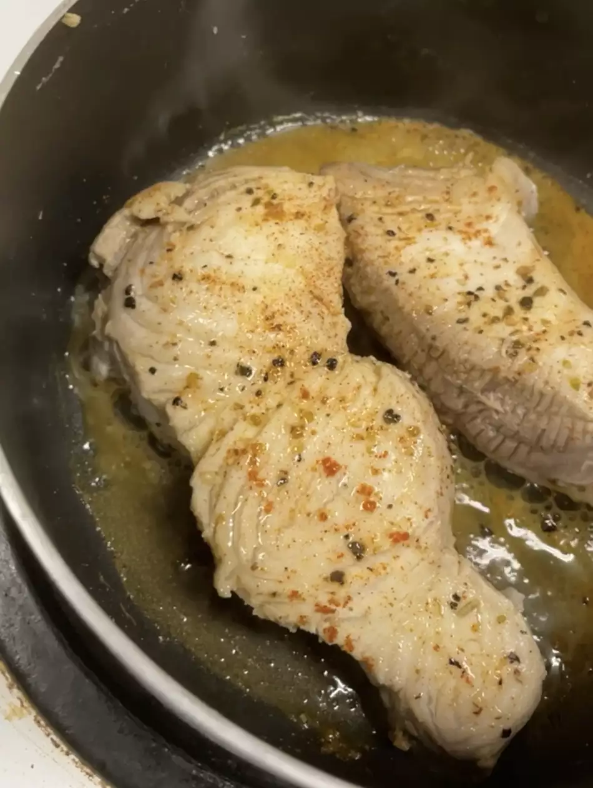

Grilled Gulf Shark

Description
This recipe is a great shark recipe
fun for the whole family. You can add anything you like
including grilled, gulf, and shark.
- 2 (8 ounce) shark steaks
- 2 cups milk
- 1 tablespoon lemon juice
- sea salt and freshly ground black pepper to taste
- Place the shark steaks in a shallow dish and pour milk over them to cover. Let stand for 2 hours, or refrigerate overnight.
- Prepare a grill for medium-high heat. Remove the shark steaks from the pan and pat dry. Discard leftover milk. Season the steaks with lemon juice, sea salt and pepper.
- Grill the steaks until meat is firm, about 15 minutes, turning once. Fish should appear white all the way through.